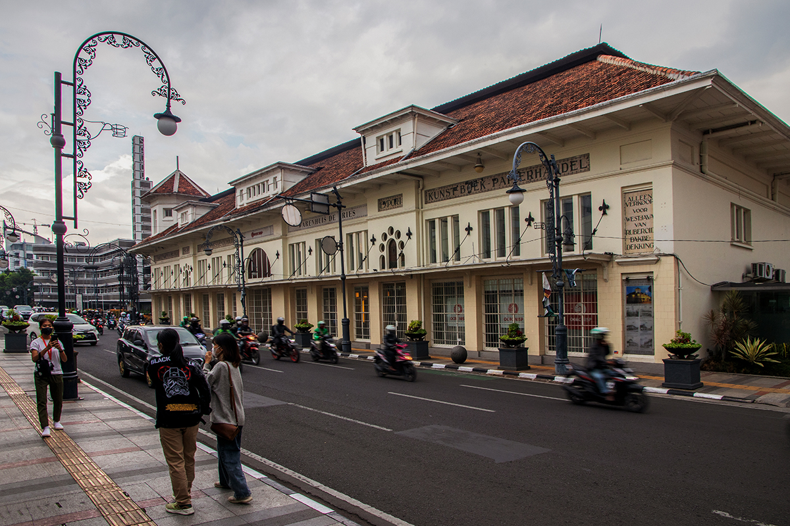
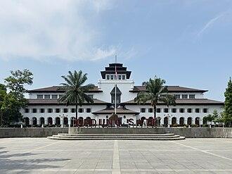
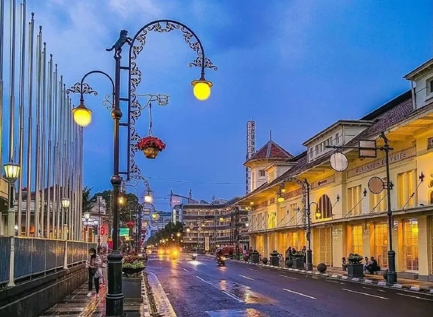

Jalan Braga
sumber: indonesia.travel
Jalan bersejarah peninggalan era kolonial Belanda yang kini menjadi pusat wisata, kuliner, dan nostalgia. Dikenal dengan arsitektur klasik dan suasana yang romantis di malam hari.
📍 Jalan Braga, Kecamatan Sumur Bandung, Kota Bandung, Jawa Barat
🕒 24 JamGedung Sate
sumber: wikipedia.org
Bangunan ikonik pusat pemerintahan Jawa Barat yang terkenal dengan ornamen tusuk satenya. Di dalamnya terdapat Museum Gedung Sate yang menjelaskan sejarah bangunan dengan teknologi interaktif.
📍 Jalan Diponegoro No. 22, Citarum, Kecamatan Bandung Wetan, Kota Bandung, Jawa Barat
🕒 Museum Gedung Sate: Umumnya Selasa-Minggu, 09.30 - 16.00 WIB (Disarankan reservasi)Alun-Alun Bandung / Jalan Asia-Afrika
sumber: pikiran rakyat jabar
Pusat kegiatan publik dan salah satu ikon Kota Bandung. Dihiasi rumput sintetis, kawasan ini dikelilingi oleh Masjid Raya Bandung, serta bangunan-bangunan bersejarah seperti Museum Konferensi Asia Afrika.
📍 Jalan Asia Afrika, Balonggede, Kecamatan Regol, Kota Bandung, Jawa Barat
🕒 24 Jam (Kawasan umum/gratis)
Info Terbaru Bandung:
Wisata dan Kuliner
Contact Us!
+62-123-4567-890 email@address.com
Wisata dan Kuliner
Contact Us!
+62-123-4567-890 email@address.com